十一沈阳我们去哪儿（推荐）
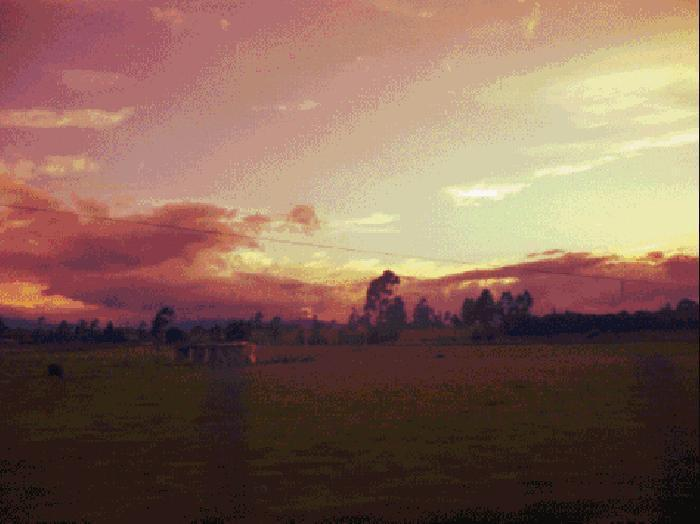
太多的风景走马观花，城市里人声噪杂。
你需要一次旅行，不遗忘，不仓促。
城市以北，心灵深处。

○
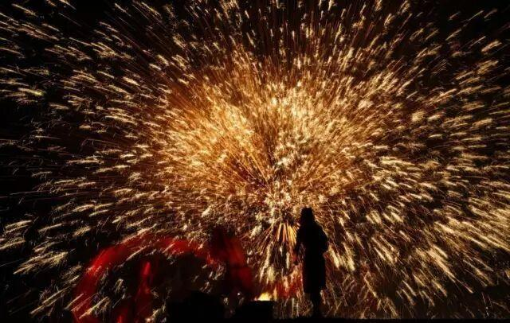
国庆来临，天地同庆。夜空捉满星星，在这样盛大的夜晚一并点燃，四溢的焰火腾空而起，演绎锦绣河山，异域的表演热辣明艳，火树银花的火龙钢花秀出正当辉煌的中国龙。
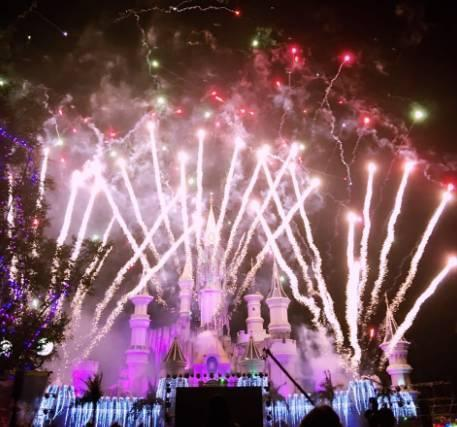
2016沈阳方特最后一个夜场“无与伦比方特夜”
夜场开放时间：10月3日~10月6日 16:00~21:00
全价票：220元/人，身高1.5米（含）以上；
儿童票 ：160元/人，1.2米—1.5米的儿童；
夜场票价：120元 （1.3米以下儿童免票）

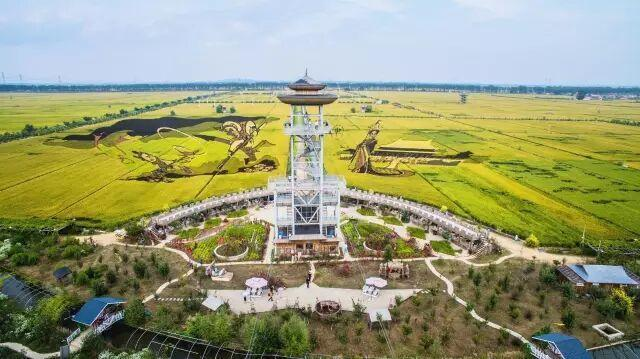
一叶知秋，一稻拾梦，国庆稻米文化节丰收篇继续狂欢，一同收割美丽奇迹，猜重量、稻迷宫等趣味游戏等着你。更有买米即可免费入园的福利，2016新米上市，用最简单的味道，说最深刻的感情。
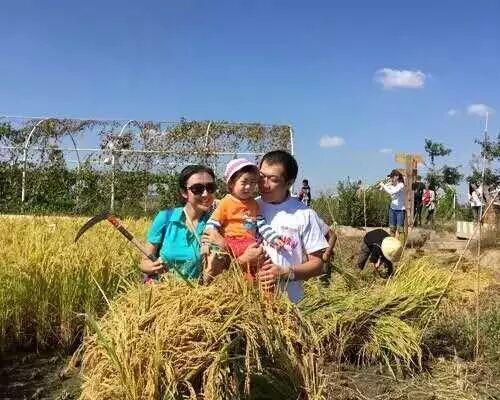
门票：60元
地址：沈阳市沈北新区兴隆台锡伯族镇盘古台村101国道旁
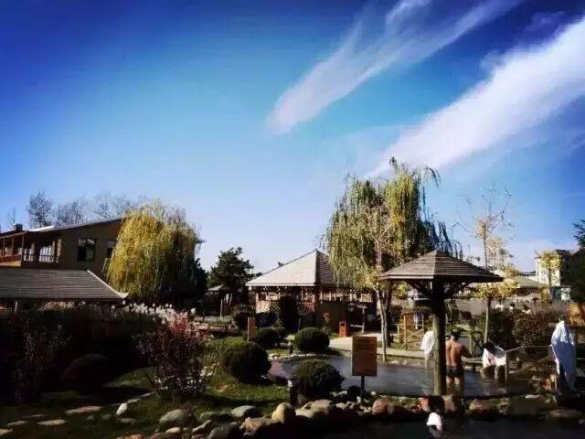
沸涌的金汤一解秋乏，降温也惊扰不了潺潺的热泉。北汤温泉国庆优惠私享，七天欢度活动盛宴。手工DIY、装黑玉子大赛、你比划我猜、搓玉米大赛、水果冷餐会以及幸运大转盘等全天不断的送礼环节，会员优惠力度空前，现在加入还为时不晚。
活动时间：10月1日-7日
门票：189元
地址：沈阳市沈北新区杭州路189号

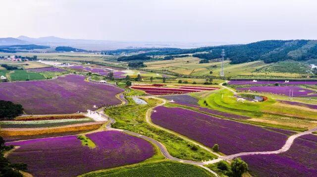
薰衣草的花期为100天，自然规律为这美丽界定了期限，即使这样它还是奋不顾身，对于你的到来翘首以盼。潇潇秋季，你依旧能徜徉花海，这片浪漫唯美的乐土，香气迷人。
门票：60元
地址：沈阳市沈北新区马刚乡马泉沟村(沈阳国家森林公园西南侧)

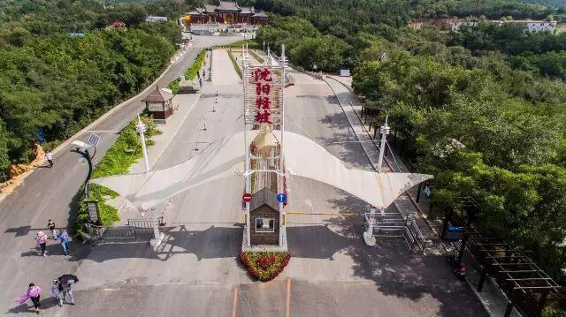
奇迹一直都在，众人猎奇却仍道不尽这个谜。上下颠倒，颠覆自然。怪堡、万佛寺、帽山等众多景观足够你流连忘返，一起去找秋天埋下的的秘密。
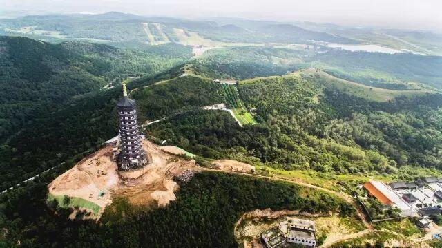
怪坡门票：40元/人
地址：沈阳市沈北新区清水台清水台街道拥屯村（102国道旁）

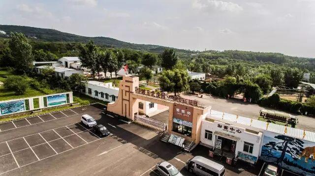
未见其影，先闻其声，靠近虎园便可听到呼啸阵阵。这里是目前辽宁地区最大的人工饲养、繁育东北虎的基地。游客可乘坐"笼车"亲手喂食猛虎。率领松鼠猴、小鹿、荷兰猪、孔雀、黑熊、羊驼等动物组建动物王国。
虎园门票：80元/人
怪坡加虎园联票：100元/人
地址：沈阳市沈北新区清水台镇拥屯村（102国道旁）

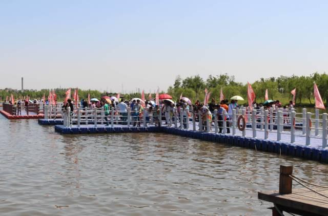
漫步浮桥，喂食锦鲤，湖光粼粼，大好时光不闷不躁。儿童陆地游乐场留住童趣，释放欢笑。特设独有的烧烤回廊让你在这自然里享受视觉和味觉的双重满足，你可以乘坐游船，也可骑着观光自行车，与秋天并肩前行。
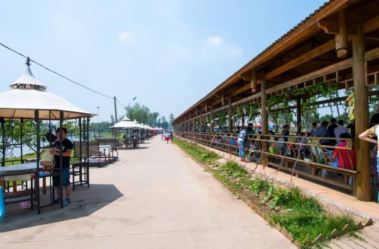
陆地游乐场分为单项票和套票两种
烧烤每张桌子租金30元或50元两种
地址：沈阳市沈北新区蒲河大道蒲南路108号

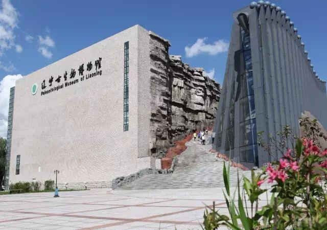
恐龙象征了孩子们丰富的想象力，他们动用自己的幻想和智慧完成对未知的探索，而辽宁古生物博物馆将这些历史真实的还原。这里是我国迄今规模最大的古生物博物馆，占地面积19000 m2，是一个集展示、收藏、科研、科普、教学等功能于一体的公益性博物馆。
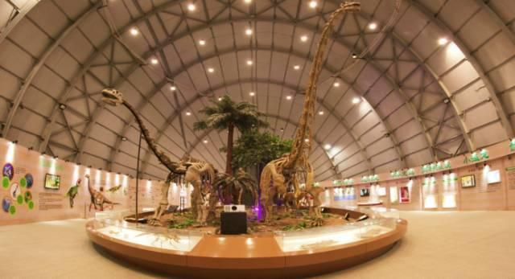
门票：免费，需携带身份证。
地址： 沈阳师范大学院内

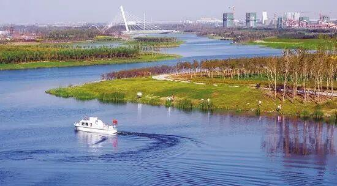
蜿蜒的河水肆意游走，岸边的行人信步悠然，帐篷露营，全家野餐，是一个让你愿意停下脚步去享受的好去处。飞鸟不紧不慢，也观察这美好的人间。
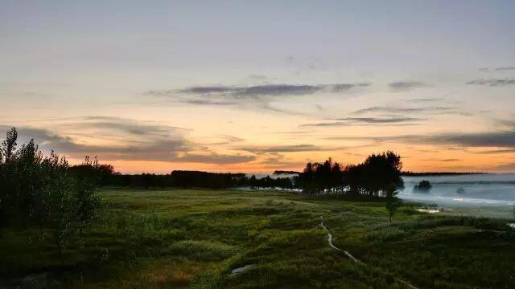
门票：免费
地址：沈阳市沈北新区蒲河景观路

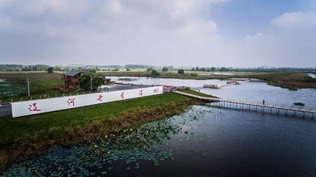
候鸟泄露了美丽的秘密，向人们指着哪里有最美的湿地。辽河七星湿地公园水岛相映、芦苇丛生，岸边滩地错落，明朗开阔，荡漾的水波和行走的云都在告诉你 深呼吸。
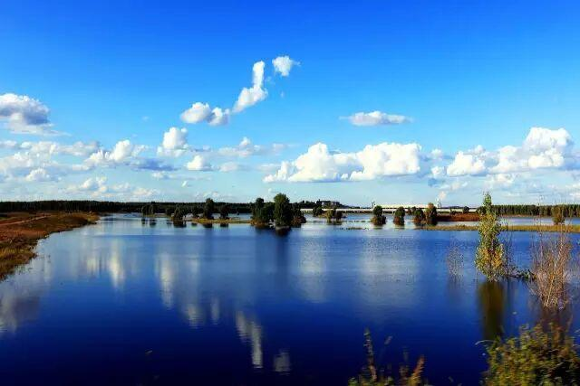
门票：免费
地址：沈阳市沈北新区石佛寺街道境内

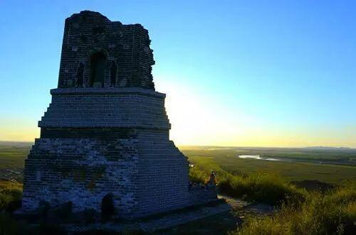
登高望远，寻古的踪迹。七星山背依辽河，形成于侏罗纪末期，其山形分布酷似北斗七星而得名。这里有建于1074年的辽代古塔、北魏拓跋氏建设的石佛及寺院、“双洲古城”遗址、辽金时期兴建的韩家花园遗址，一步一寻历史的踪迹。
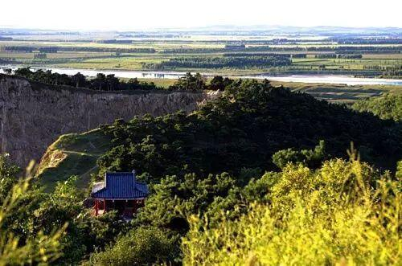
门票：免费
地址：沈阳市沈北新区石佛寺街道境内